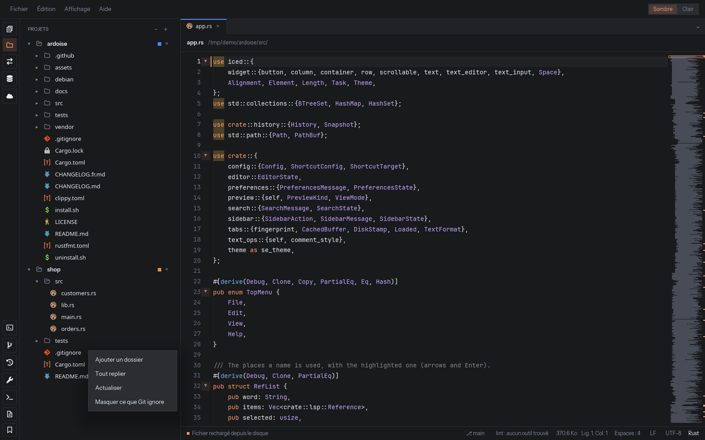
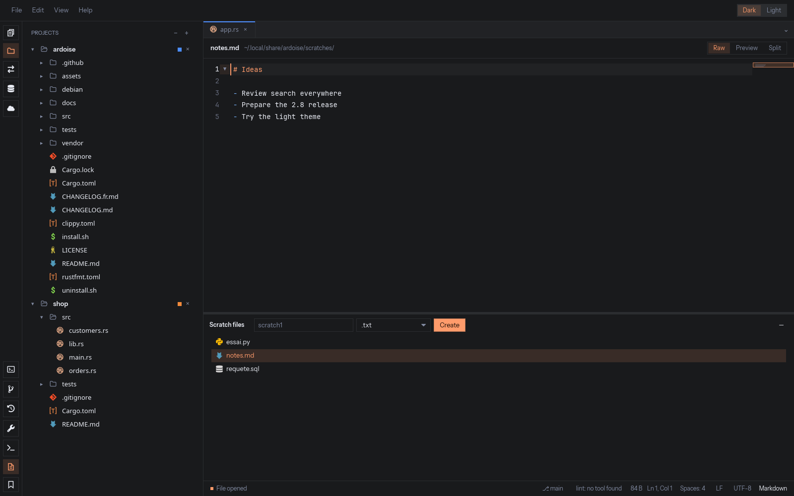
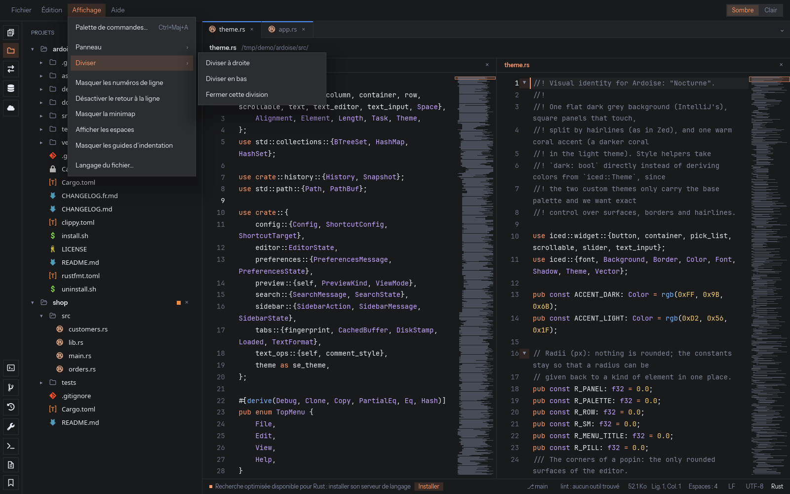
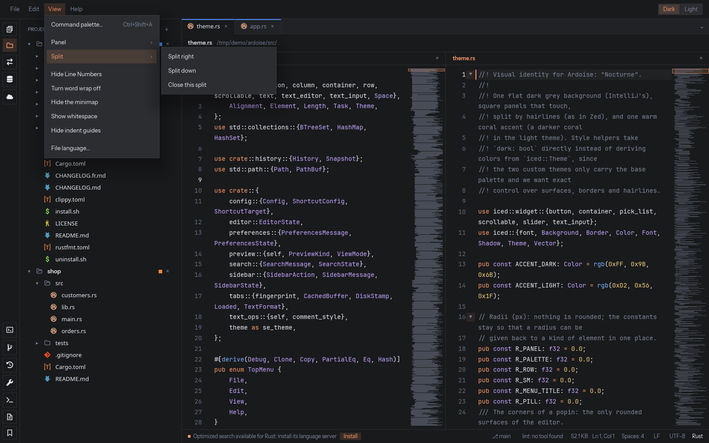

Espace de travailWorkspace
Barre latérale, projets, fichiers Scratch, signets, fenêtres scindées.Sidebar, projects, scratch files, bookmarks, split windows.
La barre latéraleThe sidebar
Ctrl+B l'affiche ou la masque. Elle est large par défaut (360 px) pour que les panneaux des plugins montrent leurs boutons en entier ; son contenu se règle dans Préférences › Panneaux latéraux. Les panneaux de chaque plugin installé sont listés dans Affichage › Panneau.
Ctrl+B shows or hides it. It is wide by default (360 px) so plugin panels show their buttons whole; its content is set in Preferences › Side panels. The panels of every installed plugin are listed in View › Panel.
Fichiers et projetsFiles and projects
- Fichiers : les fichiers ouverts, pour passer de l'un à l'autre. Clic droit dans la zone vide : Nouveau fichier, Ouvrir un fichier, Ajouter un projet, Tout enregistrer, Tout fermer.Files: the open files, to switch between them. Right click on the empty room: New file, Open file, Add project, Save all, Close all.
- Projets : un ou plusieurs dossiers en arbre. Clic droit dans la zone vide : Ajouter un projet, Tout replier, Actualiser, Masquer / Afficher ce que Git ignore.Projects: one or several folders as a tree. Right click on the empty room: Add project, Collapse all, Refresh, Hide / Show what Git ignores.
- Un dossier doit être approuvé avant que les outils qui lui sont propres (linters du projet, commandes de tâches) s'exécutent ; la liste se gère dans les Préférences.A folder must be trusted before its own tools (project linters, task commands) run; the list is managed in the Preferences.

La barre latérale avec le panneau Projets déplié sur deux projets, un fichier ouvert, et le menu clic droit de la zone vide.The sidebar with the Projects panel expanded on two projects, a file open, and the right-click menu of the empty room.
Capture à venirScreenshot to comeFichiers ScratchScratch files
Le bouton Scratch sous la liste des fichiers ouvre un panneau pour créer des notes et des essais (un nom + une extension). Ils s'enregistrent au fil de la frappe, ne se ferment jamais et restent jusqu'à ce que vous les supprimiez. Leur dossier se change dans Préférences › Fichiers Scratch (il doit être vide : les fichiers qu'il contient deviendraient des fichiers Scratch).
The Scratch button under the file list opens a panel to create notes and trials (a name + an extension). They are saved as you type, never close, and stay until you delete them. Their folder can be changed in Preferences › Scratch files (it must be empty: the files already in it would become scratch files).

Le panneau Scratch avec trois notes (par ex. notes.md, essai.py, requete.sql) et l'une d'elles ouverte.The Scratch panel with three notes (e.g. notes.md, try.py, query.sql) and one of them open.
Capture à venirScreenshot to comeFenêtres scindéesSplit windows
Affichage › Scinder : à droite ou en dessous, pour voir deux fichiers (ou deux endroits du même) côte à côte. Fermer ce panneau scindé se trouve au même endroit et n'est actif que lorsque l'éditeur est scindé.
View › Split: right or below, to see two files (or two places of the same) side by side. Close this split is in the same place and is active only when the editor is split.


Deux fichiers côte à côte en scission verticale, le menu Affichage › Scinder ouvert.Two files side by side in a vertical split, the View › Split menu open.
Capture à venirScreenshot to comeSession et donnéesSession and data
Ardoise reprend où vous en étiez : fichiers ouverts, position, et même le texte non enregistré. La session est dans ~/.local/share/ardoise/session.json (~/Library/Application Support/ardoise sur macOS), lisible par vous seul ; supprimez le dossier pour l'oublier.
Ardoise picks up where you left off: open files, position, even unsaved text. The session is in ~/.local/share/ardoise/session.json (~/Library/Application Support/ardoise on macOS), readable by you only; delete the folder to forget it.